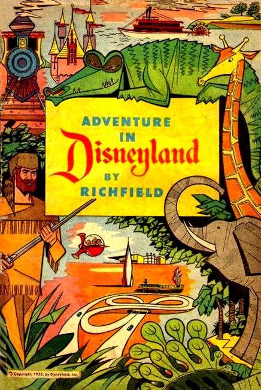
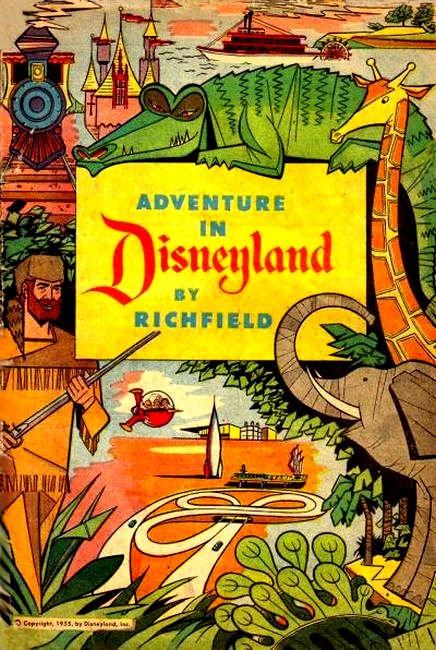

Western Brands
In 1907, Edward Henry (E.H) and Al Wadewitz bought West Side Printing Co. of Racine, Wisc. They incorporated the new company in 1910 as Western Printing & Lithographic Co. In 1916, they acquired the assets of the failed publisher Hamming-Whitman Publishing Co., which they made a subsidiary of Western under the name Whitman Publishing Co.
Under the Whitman publishing wing, Western produced Big Little Books beginning in 1932 and Little Golden Books beginning in 1938. Over these years Western began to acquire the licenses to produce publications featuring the stars of the Disney, Warner Bros., M-G-M, and Walter Lantz studios.
Around 1936, Western began to work with Dell, printing their established comics titles like The Funnies and Popular Comics at Western's Poughkeepsie, New York printing plant. Not long after starting to produce comics of their own, such as Super Comics and Crackajack Funnies, Western also assumed complete production duties over these Dell titles in 1939.
In 1944 Dell and Western formalized their partnership to produce a line of standard newsstand comic books with Dell generally providing the financing and distribution, while Western produced the contents and printed the comics. Many of these comics featured the characters licensed by Western. Some of these licensed comics, however, were wholly produced and financed separately from Dell by K. K. Publications, Inc.
When licensing agent Kay Kamen sold Western a licensing deal with Disney, he arranged a special partnership agreement that resulted in the formation of this publisher. These comics were produced and printed by Western and distributed by Dell, but technically published by K. K. Publications.
Since K. K. Publications' titles Red Ryder and Walt Disney's Comics and Stories are commonly thought of as Dell comics due to the Dell logo on the covers after 1948, these comics can be found in this database under the Dell master publisher. This arrangement between Western and Dell lasted until 1962.
During this period, Western also produced without Dell other products not distributed through newsstands, but rather through the book market or as giveaways distributed through retail outlets. These items can be found under this master publisher.
In 1958 Western entered into a joint publishing effort with Pocket Books under the name Golden Press, Inc. Just a few years later, Western bought out Pocket Books' interest and made Golden Press one of their primary divisions. Many of Western's comic products were packaged for the book market under this Golden Press division.
After ending their arrangement with Dell in 1962, Western began their own line of newsstand comics, again utilizing their many licences, under the brand name Gold Key. Gold Key's New York office had two editors in 1968, one of whom was Paul Kuhn. The 2nd editor from 1966 to 1970 isn't known. Del Connell was editor at the LA office during this period. In 1971, Western began distributing versions of their newsstand comics exclusively for the book market under the brand Whitman. Western discontinued their Gold Key line in 1980, but continued their Whitman line into 1984.
Behind the scenes in those later years, Western was sold to Mattel in 1979, and then sold again at the end of 1983 to a private investor. Over the next several years the various assets of Western were reorganized or re-sold several times before a final bankruptcy auction in 2001.